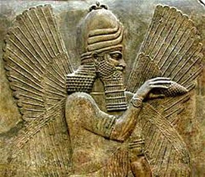
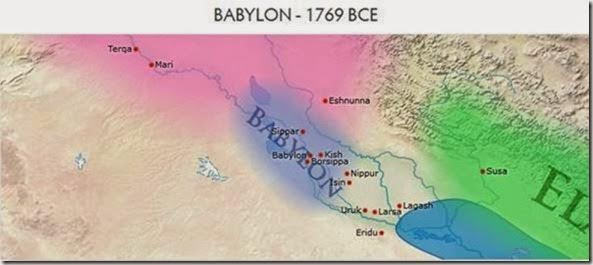
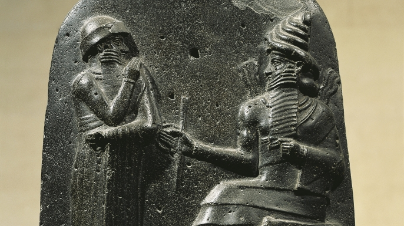
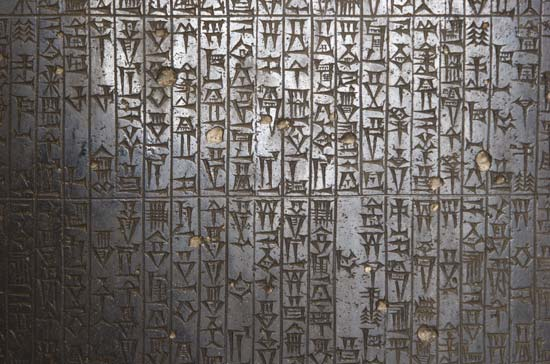
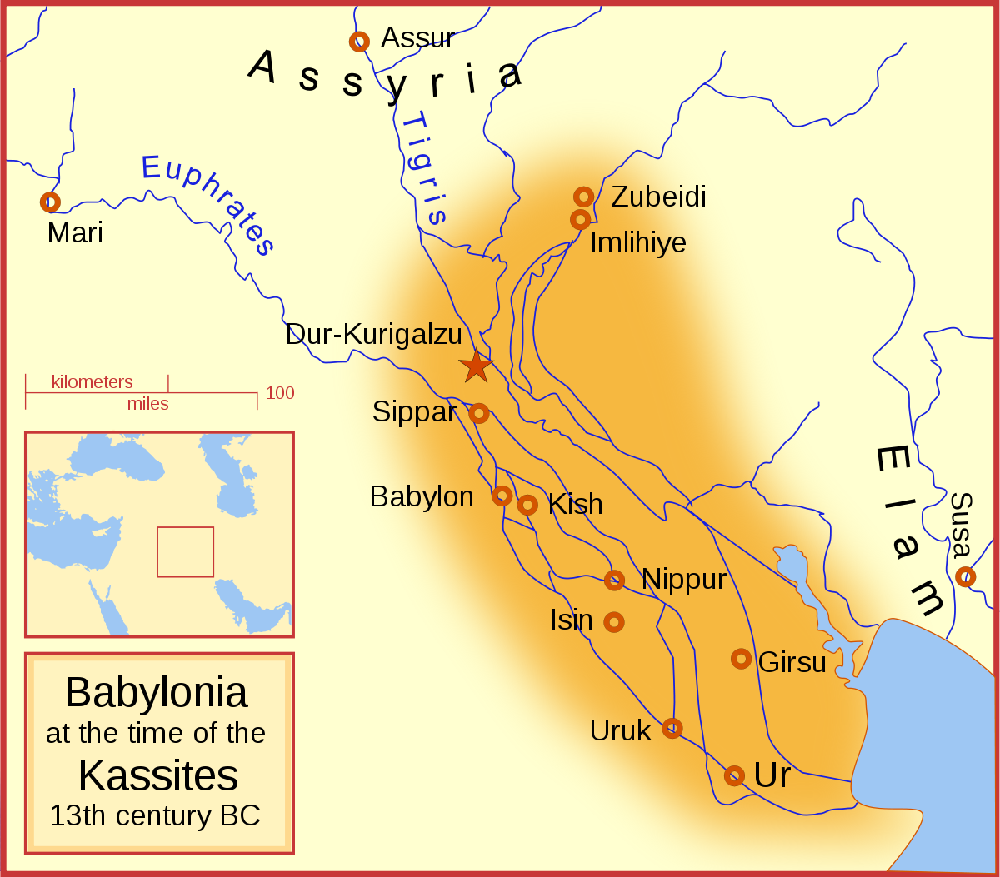
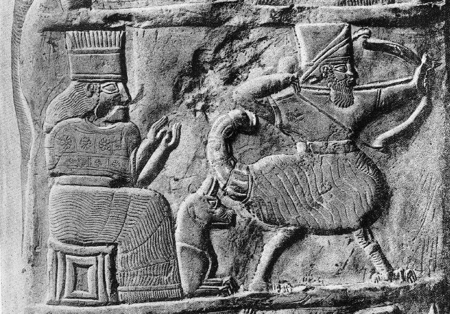
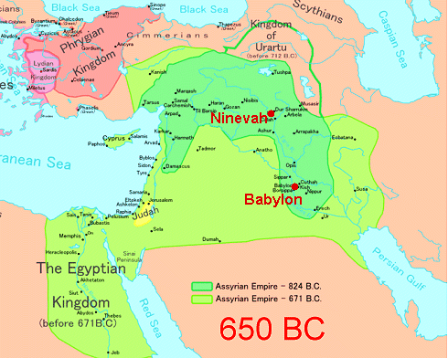
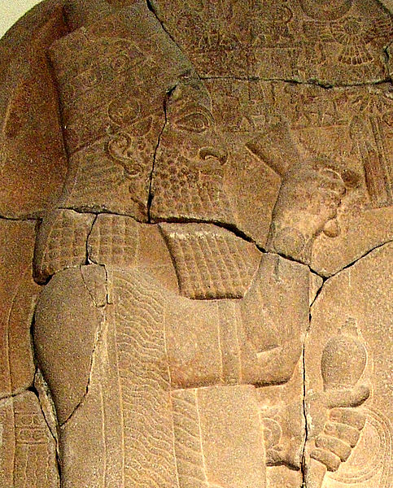
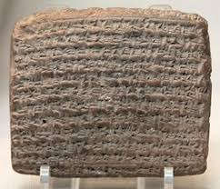
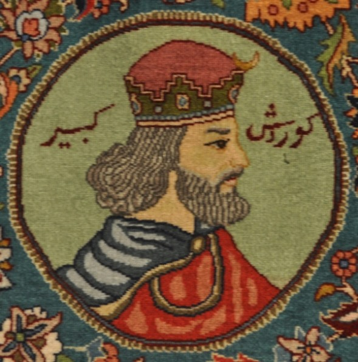

The Babylonian Civilization
By Carver and Jack
Government
Type of Government
- Monarchy (Family controls nation)
- Hereditary (Father to son)
- Male (Only men could be the leader)
Higharchy
- Government Officials, Elites
- Craftsman, Clerks, Farmers
- Slaves
Contributions
Astronomy
First civilization to study astronomy
12 Month Calender

Created the 12 month calendar
Base-60 Numbering System
Thats why there are 60 seconds in a minute and 60 minutes in a hour
Religion
Type of Religion
- Polytheistic (Multiple gods)
- Influenced by Sumerian religion
- Worshiped idols
- No longer practiced today
Marduk
- Very important god
- Patron deity of the city of Babylon
- Associated with food, water, judgement and magic
Old Babylonian Period
- 2000-1600 BC
- Agricultural crisis
- Nomatic tribes formed
- Hammurabi united tribes
- In 1595 the Hittite King Mursilis invaded Babylonia from the south and conquered it
- King Mursilis then destroyed the statue for their god, Marduk
Hammurabi
- Babylonian King
- Lived 1810 BC - 1750 BC
- Reigned from 1792 - 1750 BC
- Extended Babylon through war
- Most well known Babylonian king
- Created Hammurabi's code
Hammurabi's Code
- An eye for an eye
- Created by Hammurabi
- Early law system
- Not actually the first
- Includes monetary punishments
- ~15 laws having to do with their religion
Kassite Period
- 1531 - 1155 BC
- Kassites raided the city of Babylon
- Babylonians then took back their city
- They got their statue back
- Babylonians got invaded by the Assyrians and the Elam clan
- The statue was taken both times
- Under Nebuchadnezzar the Babylonians won the battle against the Elam clan
Nebuchadnezzar
- Babylonian King
- Lived from 1125 - 1104 BC
- King for 22 years
Assyrian Period
- 911 - 619 BC
- Recovered from the Dark Ages
- Ruled under King Assurnasirpal II
- Babylon started to expand
- Split from the Assyrians
- Multiple kings were assassinated
Esarhaddon
- Assyrian King
- Lived from 680 - 669 BC
- Rebuilt Babylon
- Unlike his father, he didn't destroy Babylon
- Conquered Egypt
Neo-Babylonian Period
- 626 - 539 BC
- Nabopolasser started a new kingdom and became king
- Nabopolasser wanted to conquer Assyria
- Egyptians threatened to attack
- Nabopolasser backed off
- Multiple other attempts took down Assyria
- Babylonia took over Assyria
- Captured the Hebrews (of course)
- Cyrus the Great attacked Babylon and took over the kingdom
Nabopolassar
- Took position as king of Babylon
- Created Neo-Babylonian empire
Nebuchadnezzar II
- Was king of Babylon for the longest amount of time during the Neo-Babylonian era.
- Died at age 71 or 72
- Renovated Babylon
- Created the Tower of Babel and the Hanging Gardens of Babylon
Cyrus the Great
- King of Persian empire
- When the Babylonians were having a religious celebration his army attacked and captured Babylon